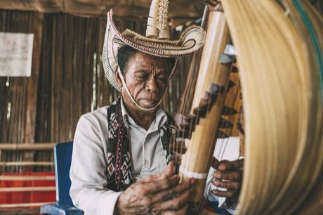

Home / Classical Worlds / Southeast Asia and the Islands
Playable heritage gameSasando
Also known as Rote tube zither
The sasando is a tube zither from the island of Rote in eastern Indonesia. A bamboo tube is wrapped with strings and stands inside a fan-shaped bowl of dried palm leaf, which lends the plucked notes a bright, shimmering ring.


How to play
- Look at the tube: the strings run around it, low notes on one side and high notes on the other.
- Watch a bead travel down each string toward its wooden wedge.
- Pluck the string just as the bead arrives.
- Play the lullaby first, then the livelier gathering step.
Rules at a glance
- The strings are tuned to a seven-note scale, with wooden wedges setting each pitch.
- A pluck right on the beat is perfect and a close one is good.
- Extra plucks that match no note cost points.
- Each tune is played through twice.
About the tradition
The sasando belongs to the island of Rote and nearby islands in eastern Indonesia, where makers shape the tube, wedges and palm-leaf bowl by hand. Players pluck both sides of the tube with the fingertips, and the instrument is still made and played today.
Origins
Usually placed in the era of Classical Worlds (about 1000 BCE to 500 CE), although its exact origins are uncertain, within the cultural world of Southeast Asia and the Islands.
Credits
- Photo: Fakhri Anindita, CC BY-SA 4.0, source on Wikimedia Commons
- Text: CC BY-SA 4.0, World Heritage Games.
Sources

Get the app
Sasando is one of 9 zithers and harps in the Zithers & Harps of the World app for Android. Submitted to Google Play; in review. Store links appear here the day it goes live. One app, many traditions, no account needed.
More games to play


Erhu Two-String Fiddle
China · Musical instrumentsPlay preview · in the Lutes & Fiddles of the World app
More from Indonesia

Angklung bamboo chime ensemble
Indonesia · Musical instruments

Batik wax-resist pattern studio
Indonesia +1 · Crafts and makingPlay preview · in the Textile Crafts of the World app


Cublak-cublak suweng
Indonesia · Street and playground games